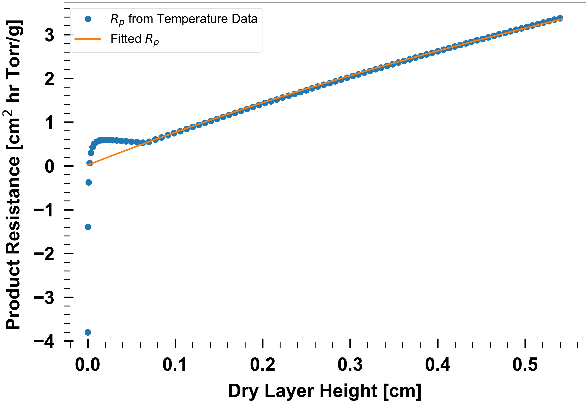
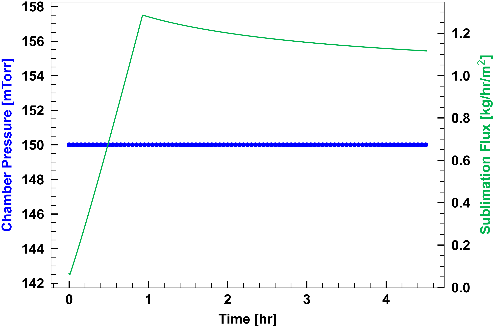
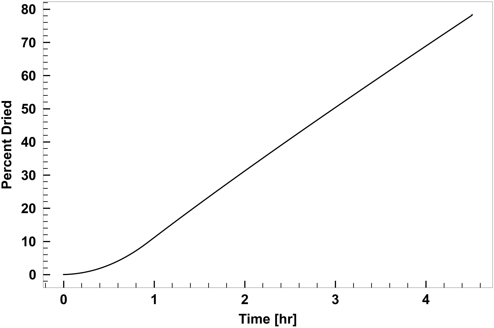
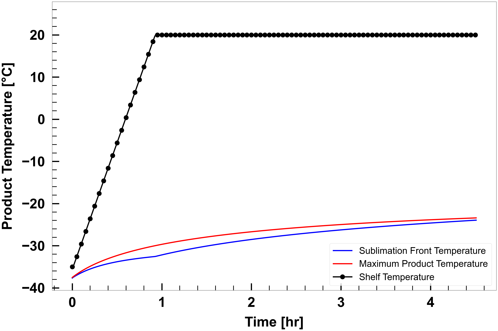

Fitting Unknown Rp to Process Data
# Since this is running in a Jupyter notebook, need to help it find LyoPRONTO
# For the documentation, the path is nearby.
# If you have already installed LyoPRONTO as a Python package,
# this should be unnecessary.
# import sys
# sys.path.append('../../')
from pathlib import Path
from scipy.optimize import curve_fit
import numpy as np
import matplotlib.pyplot as plt
from matplotlib import rc as matplotlibrc
from lyopronto import calc_unknownRp, plot_styling
################################################################
######################## Inputs ########################
# Vial and fill properties
# Av = Vial area in cm^2
# Ap = Product Area in cm^2
# Vfill = Fill volume in mL
vial = dict([('Av',3.80),('Ap',3.14),('Vfill',2.0)])
#Product properties
product = {
'cSolid':0.05, # Concentration of solute in the frozen solution
'T_pr_crit':-5.0, # Critical product temperature in degC
}
# Vial Heat Transfer Parameters
# Kv = KC + KP*Pch/(1+KD*Pch)
# KC in cal/s/K/cm^2, KP in cal/s/K/cm^2/Torr, KD in 1/Torr
ht = {'KC': 2.75e-4, 'KP': 8.93e-4, 'KD': 0.46}
# Chamber Pressure
# setpt = Chamber pressure set points in Torr
# dt_setpt = Time for which chamber pressure set points are held in min, including ramp time
# ramp_rate = Chamber pressure ramping rate in Torr/min
Pchamber = {'setpt':[0.15],'dt_setpt':[1800.0],'ramp_rate':0.5}
# Shelf Temperature
# init = Intial shelf temperature in C
# setpt = Shelf temperature set points in C
# dt_setpt = Time for which shelf temperature set points are held in min, including ramp time
# ramp_rate = Shelf temperature ramping rate in C/min
Tshelf = {'init': -35.0, 'setpt': [20.0], 'dt_setpt': [1800.0], 'ramp_rate': 1.0}
To estimate \(R_p\), we need to provide experimentally measured temperatures. The format preferred by the web interface is a CSV with no headers, time in hours in the first column, and temperature in degrees Celsius in the second column.
If you are loading these yourself in a script, you should provide it with those units, but you can load it from whatever file makes sense and simply provide it to the call to calc_unknownRp.dry below.
The call to calc_unkonwRp.dry provides an array of simulation output, as well as an array with time, dry layer height, and \(R_p\) in the three columns.
The web interface simply feeds the computed resistance vs dry layer height to SciPy's scipy.optimize.curve_fit in order to estimate the simple nonlinear form:
$$ R_p = R_0 + \frac{A_1 l}{1 + A_2 l} $$
params,params_covariance = curve_fit(lambda h,r,a1,a2: r+h*a1/(1+h*a2),product_res[:,1],product_res[:,2],p0=[1.0,0.0,0.0])
print(f"R0 = {params[0]}")
print(f"A1 = {params[1]}")
print(f"A2 = {params[2]}")
#################
##########################
# LaTeX setup
matplotlibrc('text.latex', preamble=r'\usepackage{color}')
matplotlibrc('text',usetex=False)
matplotlibrc('font',family='Arial')
figwidth = 30
figheight = 20
lineWidth = 5
markerSize = 20
The web interface is not currently set up to show the following graph, but it is absolutely worth checking what the fit looks like in \(R_p\) space.
fig = plt.figure(0,figsize=(figwidth,figheight))
ax = fig.add_subplot(111)
plot_styling.axis_style_rp(ax)
ax.plot(product_res[:,1],product_res[:,2],'o', markevery=5, markersize=markerSize,label='$R_p$ from Temperature Data')
ax.plot(product_res[:,1],params[0]+product_res[:,1]*params[1]/(1+product_res[:,1]*params[2]),'-',linewidth=lineWidth,label='Fitted $R_p$')
plt.legend(fontsize=40, loc='best')

fig = plt.figure(0,figsize=(figwidth,figheight))
ax1 = fig.add_subplot(1,1,1)
ax2 = ax1.twinx()
ax1.plot(output_table[:,0],output_table[:,4],'-o',color='b',markevery=5,linewidth=lineWidth, markersize=markerSize, label = "Chamber Pressure")
ax2.plot(output_table[:,0],output_table[:,5],'-',color=[0,0.7,0.3],linewidth=lineWidth, label = "Sublimation Flux")
plot_styling.axis_style_pressure(ax1)
plot_styling.axis_style_subflux(ax2)
plt.tight_layout()

fig = plt.figure(0,figsize=(figwidth,figheight))
ax = fig.add_subplot(1,1,1)
plot_styling.axis_style_percdried(ax)
ax.plot(output_table[:,0],output_table[:,-1],'-k',linewidth=lineWidth, label = "Percent Dried")
plt.tight_layout()
# figure_name = 'lyopronto_percentdried_'+current_time+'.pdf'
# plt.savefig(figure_name)
# plt.close()

fig = plt.figure(0,figsize=(figwidth,figheight))
ax = fig.add_subplot(1,1,1)
plot_styling.axis_style_temperature(ax)
ax.plot(output_table[:,0],output_table[:,1],'-b',linewidth=lineWidth, label = "Sublimation Front Temperature")
ax.plot(output_table[:,0],output_table[:,2],'-r',linewidth=lineWidth, label = "Maximum Product Temperature")
ax.plot(output_table[:,0],output_table[:,3],'-o',color='k',markevery=5,linewidth=lineWidth, markersize=markerSize, label = "Shelf Temperature")
plt.legend(fontsize=40,loc='best')
ll,ul = ax.get_ylim()
ax.set_ylim([ll,ul+5.0])
plt.tight_layout()
# figure_name = 'lyopronto_temperatures_'+current_time+'.pdf'
# plt.savefig(figure_name)
# plt.close()
